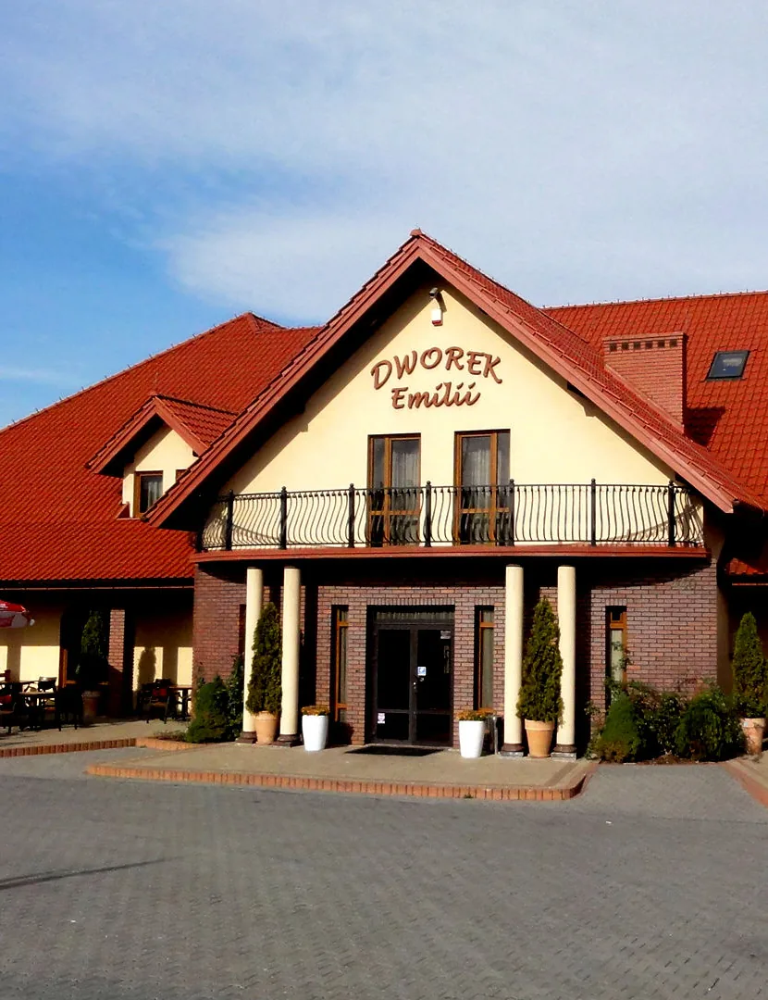
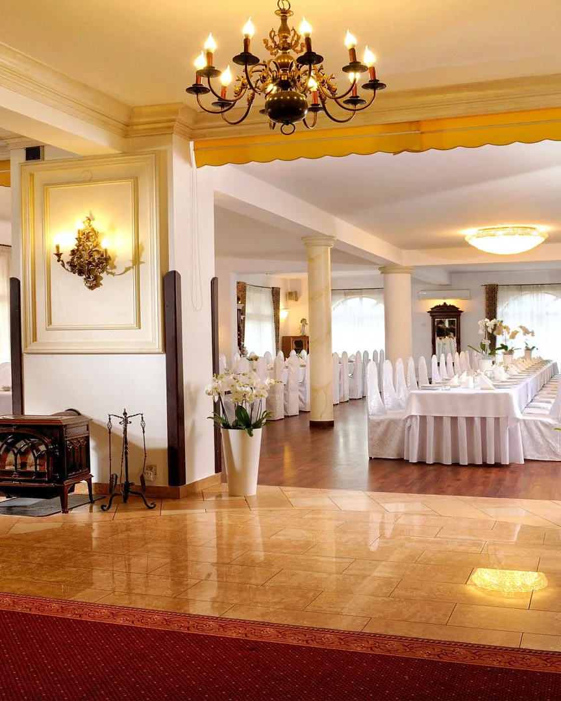
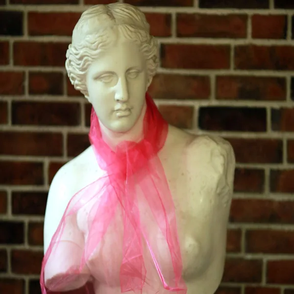
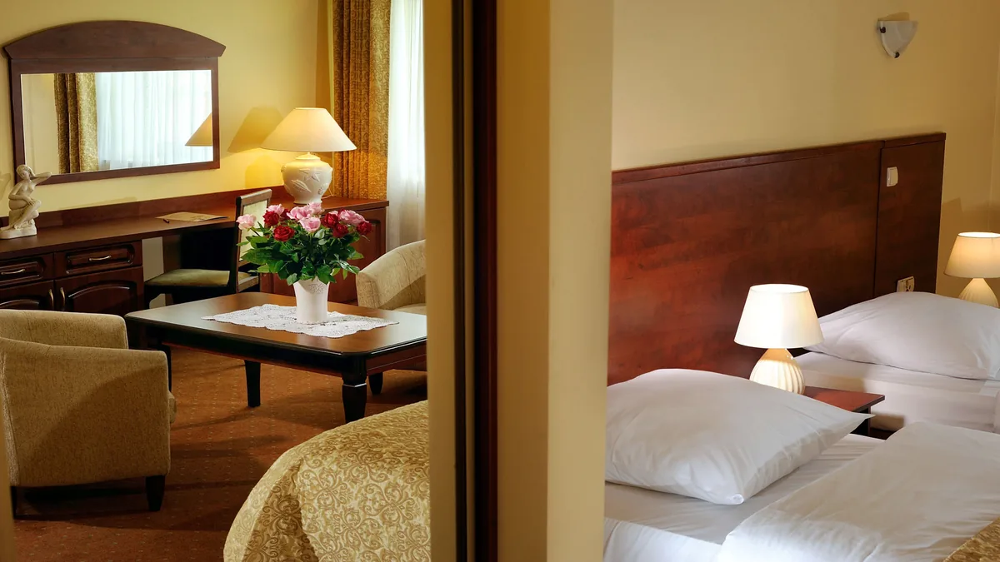
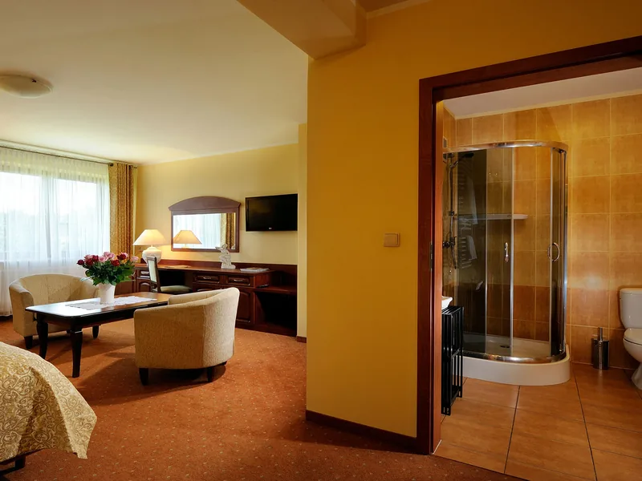
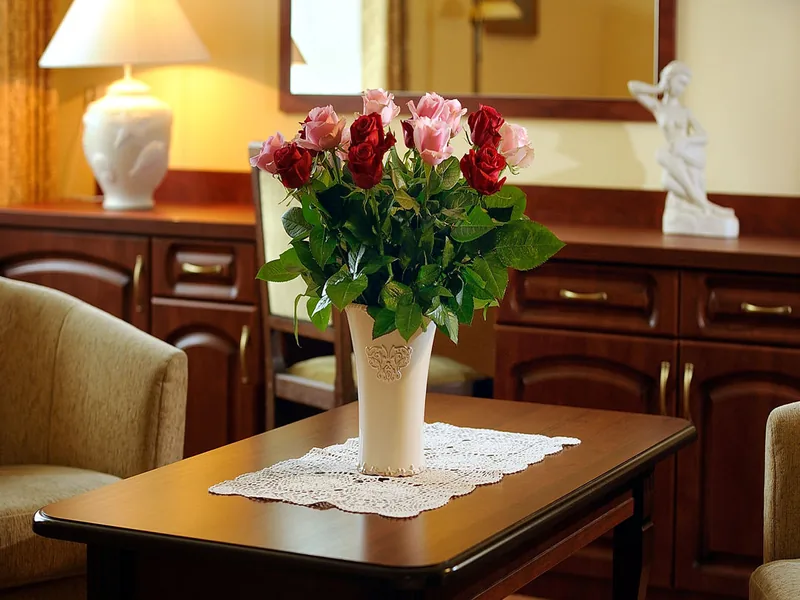
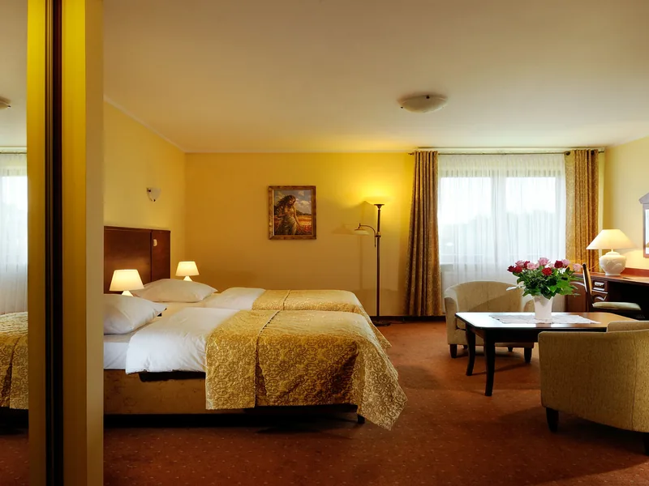
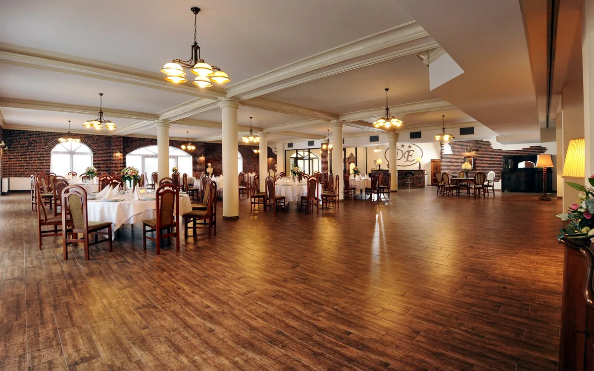
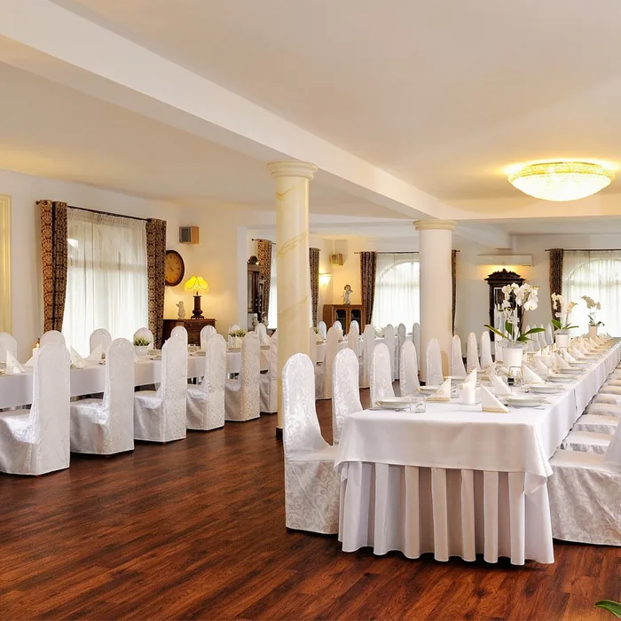
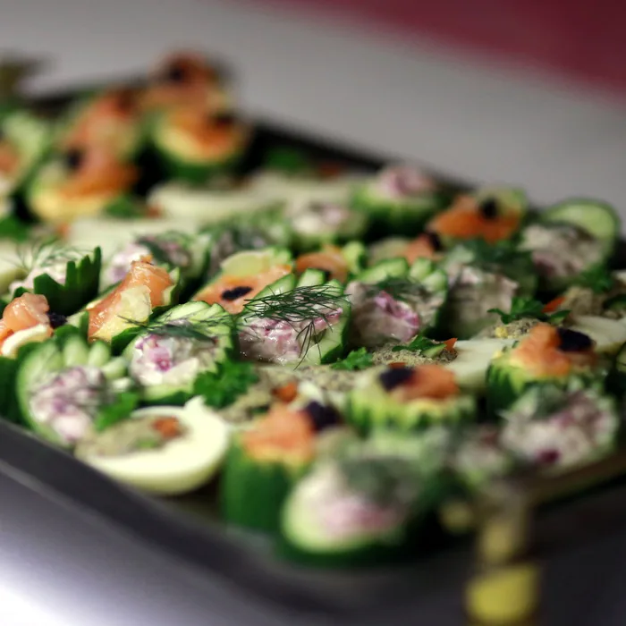

Hotel i restauracja · Tomaszkowice
Dworek Emilii
Trzygwiazdkowy hotel z restauracją, trzy kilometry od Wieliczki i dwadzieścia od centrum Krakowa. Ciche pokoje, polska kuchnia i sala na wesela oraz przyjęcia.

- 10pokoi, w tym apartament
- 3 kmod centrum Wieliczki
- 20 kmod centrum Krakowa
- od 2005organizujemy przyjęcia weselne
O dworku
Spokojne miejsce pod Wieliczką
Dworek Emilii stoi w Tomaszkowicach, w gminie Biskupice, na Pogórzu Wielickim. Do centrum Krakowa jest stąd około 20 km, do Wieliczki około 3 km, a do trasy Kraków-Przemyśl (E4) około kilometra.
Teren jest zamknięty i oświetlony, jest duży parking i letni taras. Zatrzymują się u nas turyści, którzy zwiedzają Kraków i kopalnię soli, rodziny na wypoczynku i goście w podróży służbowej. Chętnie przyjmujemy też grupy zorganizowane.
- Pokoje ze śniadaniem. Dziesięć pokoi, w tym apartament.
- Restauracja. Polska kuchnia i osobne menu dla dzieci.
- Sala na przyjęcia. Klimatyzowana, z parkietem i miejscem dla zespołu.
- Łatwy dojazd. Parking na terenie obiektu.


Pokoje
Dziesięć pokoi, jeden spokojny dom
Pokoje urządzone są ciepło i wygodnie. W każdym jest łazienka z prysznicem i telewizja satelitarna. Śniadanie i internet są w cenie pobytu.




Apartament
Jeden w całym dworku. W dniu wesela przysługuje parze młodej.
Pokój dwuosobowy
Na weekend we dwoje albo na wyjazd służbowy.
Pokój trzyosobowy
Dla rodziny z dzieckiem albo trójki znajomych.
Pokój czteroosobowy
Dla większej rodziny i małych grup.
W cenie pobytu
- śniadanie
- internet
- podatek VAT
- parking
Dobrze wiedzieć
- w pokojach obowiązuje zakaz palenia
- nie przyjmujemy zwierząt
Aktualne ceny potwierdzimy w odpowiedzi na zapytanie. Napisz, na kiedy szukasz noclegu, a sprawdzimy wolne pokoje.



Przyjęcia i restauracja
Wesela i uroczystości w eleganckiej sali
Wesela organizujemy od 2005 roku. Nowa sala bankietowa jest klimatyzowana, ma osobny parkiet i podest dla zespołu lub didżeja. Przy okrągłych stołach zmieści do 250 gości.
Mniejsze uroczystości odbywają się w sali biesiadnej na około 120 osób, z osobnym wejściem od strony parkingu i wyjściem na letni taras. Restauracja serwi polską kuchnię, a dla dzieci przygotowuje osobne menu. Robimy też catering w dowolnym miejscu.
Uroczystości rodzinne
- wesela
- chrzciny i komunie
- urodziny i imieniny
- rocznice
- Andrzejki i Sylwester
Dla firm
- szkolenia i konferencje
- bankiety i prezentacje
- imprezy firmowe
- nagłośnienie, ekran, projektor
- przerwy kawowe i obiad
Dla Pary Młodej
Powitanie chlebem i solą, lampka wina musującego, apartament, miejsca parkingowe dla gości i możliwość skorzystania z sejfu. Cena zależy od wybranego menu i liczby osób.
Galeria
Wnętrza, stoły i smaki
Kliknij zdjęcie, aby je powiększyć.
Z księgi gości
Co piszą nasi goście
„Przekraczając po raz pierwszy próg Dworku Emilii wiedzieliśmy, że TU chcemy świętować najpiękniejszy dzień w naszym życiu, i zorganizowane TU przyjęcie będzie niepowtarzalne.”
„Dziękujemy za miłą obsługę, smaczne jedzenie i wygodne łóżka!”
W serwisie Kayak goście oceniają dworek na 8,4 na 10 (514 opinii).
Okolica
Kraków i kopalnia soli tuż obok
Dworek leży na Pogórzu Wielickim, w spokojnej okolicy, a do największych atrakcji Małopolski jest stąd krótki dojazd.
W zasięgu wycieczki
- Niepołomice
- Bochnia
- Wadowice
- Oświęcim
- Zakopane
Wieliczka
Miasto z zabytkową Kopalnią Soli, wpisaną na listę światowego dziedzictwa UNESCO.
Royal Kraków Golf & Country Club
Pole golfowe w sąsiedztwie dworku.
Dworzec Kraków Główny
Dojazd pociągiem z całej Polski, a dalej już tylko kilkanaście kilometrów.
Centrum Krakowa
Do granic miasta od strony wschodniej jest około 10 km.
Lotnisko Kraków-Balice
Port lotniczy im. Jana Pawła II.
Dojazd
Jak do nas trafić
Tomaszkowice 440
32-020 Wieliczka
Dworek leży przy drodze Wieliczka-Gdów, około 3 km od Wieliczki. Od trasy E4 Kraków-Przemyśl dzieli go około kilometra.
- Samochodem: duży parking na zamkniętym terenie obiektu.
- Koleją: dworzec Kraków Główny, około 15 km.
- Samolotem: lotnisko Kraków-Balice, około 25 km.
Współrzędne GPS: 49°58′32″ N, 20°06′02″ E
Kontakt
Zapytaj o wolny termin
Napisz, kiedy chcesz przyjechać albo jaką uroczystość planujesz. Odpowiemy z aktualnymi cenami i wolnymi terminami.
- Adres
- Tomaszkowice 440
32-020 Wieliczka - Telefon
- 12 250 79 09
607 663 434 - dworekemilii@onet.eu